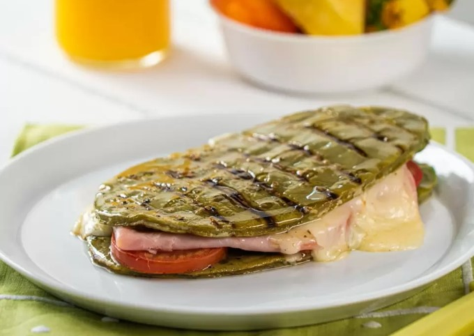

RECETA DE SANDWICH DE NOPAL
Compartida por Perla Jacinto
timer
person
Ingredientes
- 1 cucharadita de polvo de ajo, para el aceite
- 1 cucharadita de orégano, para el aceite
- Sal al gusto, para el aceite
- Pimienta al gusto, para el aceite
- ½ taza de aceite
- 2 nopales, para el sándwich
- 2 rebanadas de queso manchego, para el sándwich
- ½ jitomate, para el sándwich
- 3 rebanadas de jamón, para el sándwich
Procedimiento
- En un bowl, mezcla el ajo en polvo, el orégano, la sal, la pimienta y el aceite hasta obtener una mezcla homogénea. Reserva.
- Coloca los nopales sobre una tabla, barniza por una cara y asa sobre una sartén parrilla bien caliente.
- Coloca aceite en la otra cara del nopal y voltea para asar.
- Sobre una pieza de nopal, coloca dos rebanadas de queso y sobre la otra, coloca las rebanadas de jitomate y el jamón.
- Cocina por 5 minutos o hasta que el queso se derrita; junta ambas caras para formar un sándwich.
- Sirve acompañado de fruta y jugo natural. ¡Disfruta!
